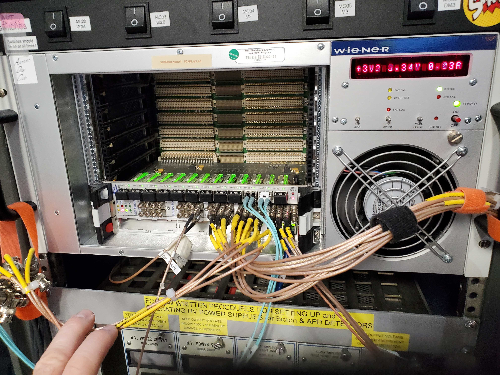
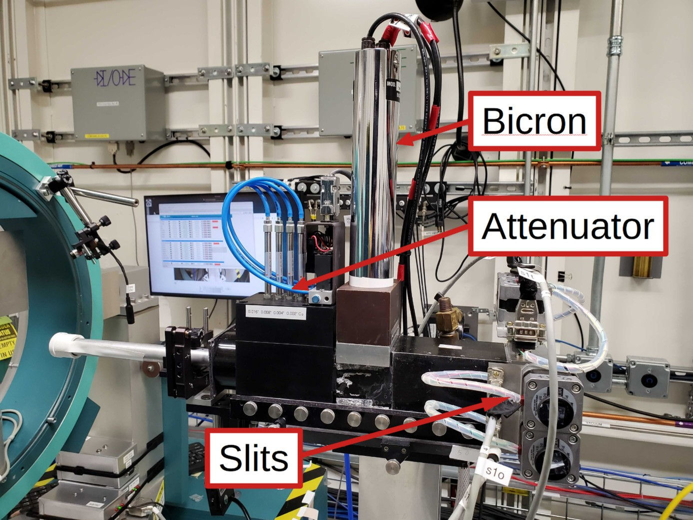
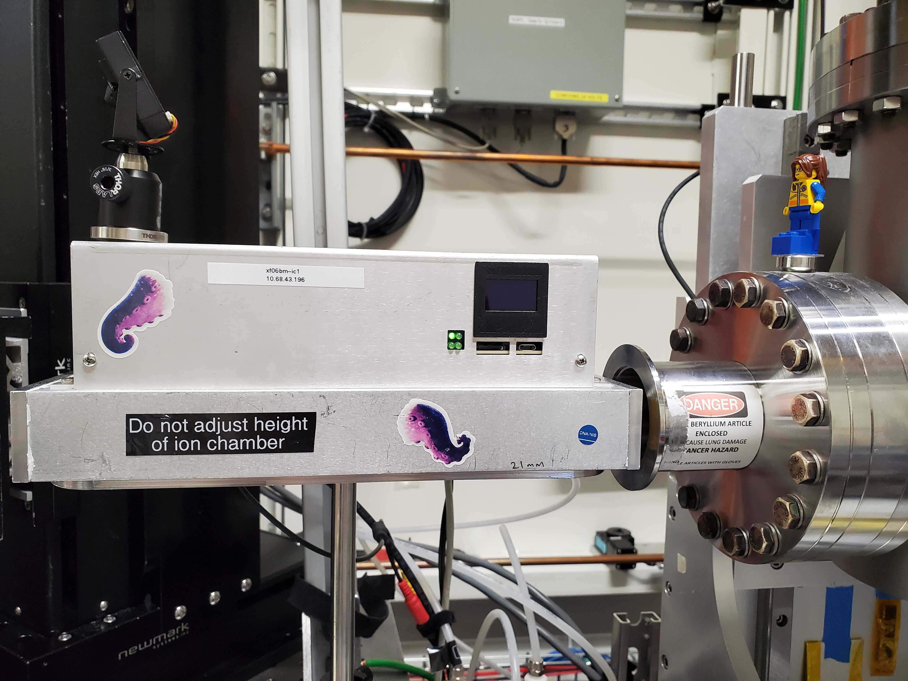
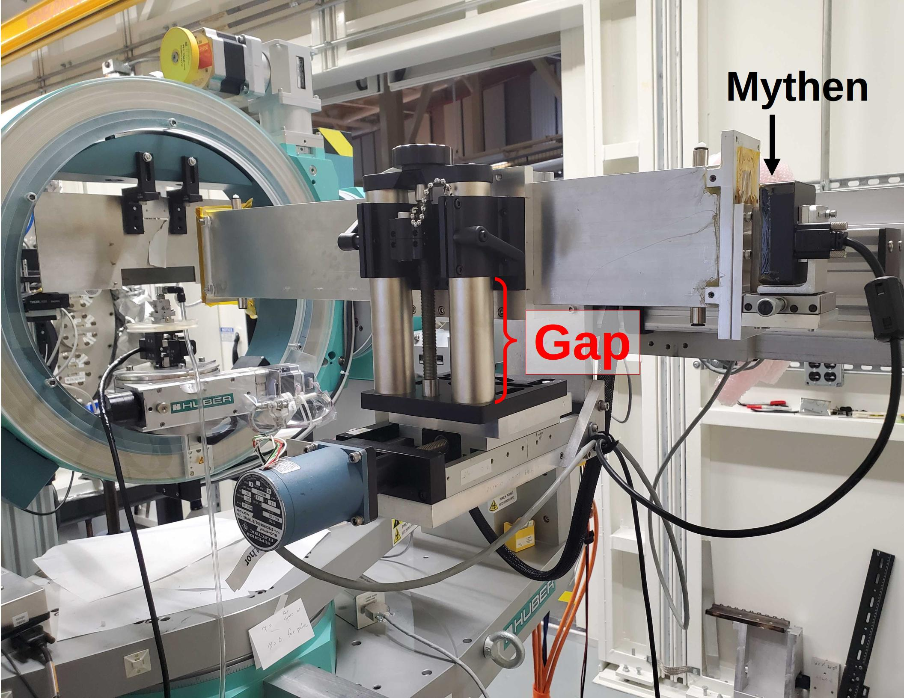
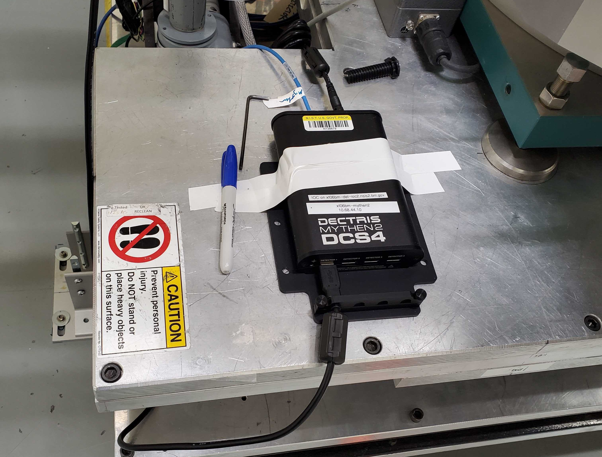
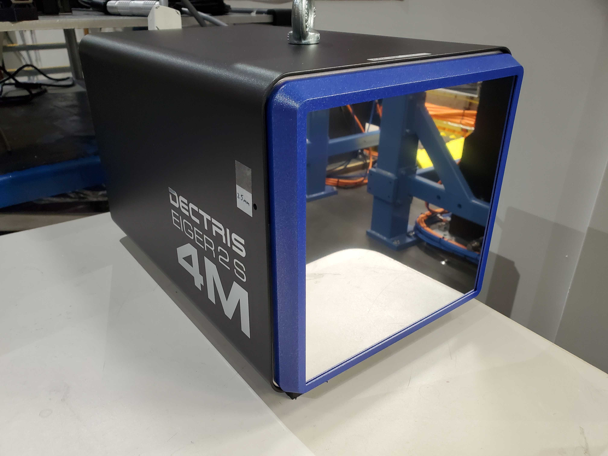
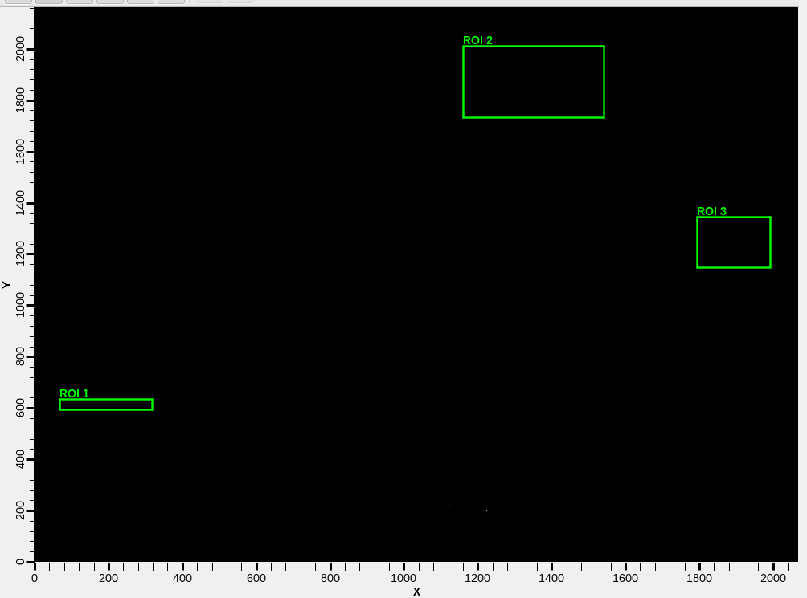
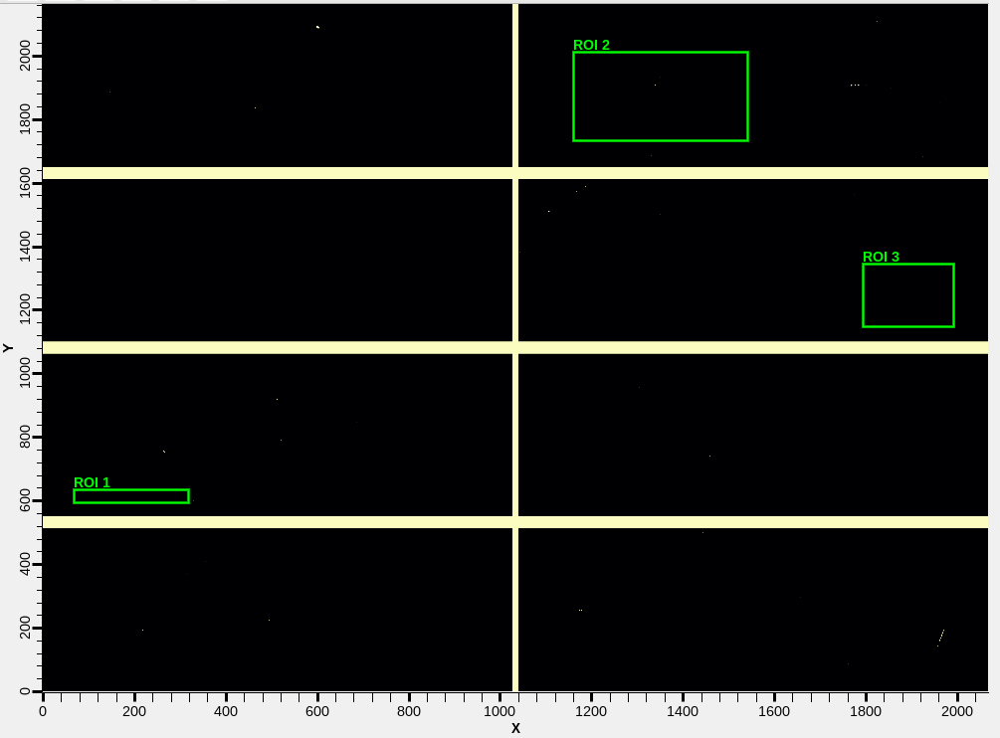
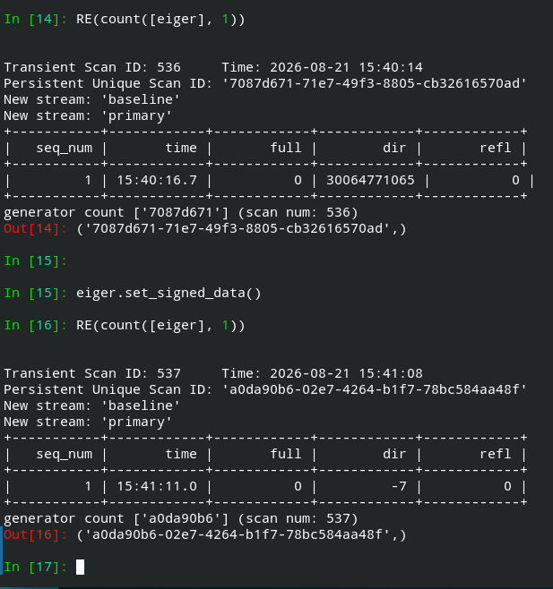

3. Detectors#
3.1. Measurement Time#
Each kind of detector has a parameter that relates to the length of an individual measurement. For an electrometer, this might be called an averaging time, for a counter it might be called a count time or integration time, for an area detector or a camera it might be called an exposure time.
In this bsui profile, each such parameter of each detector in use is identified and configured in such a way that a single object is used to set the measurement time correctly for each detector in use.
This is done in a way that uses the same syntax as any of the motors
discussed in Section 2. Measurement times
are controlled by an object called dwell_time. To see the current
value of the measurement time:
dwell_time.position
and to set a new measurement time:
RE(mv(dwell_time, 0.5))
So, if you want to take a 5 second exposure on the Mythen (Section 3.4) detector and include the monitor (Section 3.2) signal, you could do:
RE(mv(dwell_time, 5))
RE(count([struck, mythen], 1))
Some of the alignment scans discussed in Section 5
as well as the XRR scan discussed in Section 6 will
either take a measurement time argument to the function call or will
set a default measurement time by setting the dwell_time parameter
accordingly.
3.2. Monitor#
The “monitor” refers to the scalar measuring input beam intensity. This might be a Bicron or an avalanche photodiode (APD). In either case, the signal is read using a Struck scalar/counter board in the VME crate in rack D, shown in Figure 3.1.
The Bicron uses channel 25 of the Struck, the APD uses channel 26.
Future tech!
The VME is legacy equipment. It’s only current use at BMM is for reading the XRD monitor signal. It would be nice to move away from the VME crate.
{kind=link}

Fig. 3.1 The VME crate holding the Struck SIS36/38xx scalar/counter board.#
The measured monitor signal comes from the scattering of the incident beam from a sheet of plastic into the Bicron (or APD). This is shown in Figure 3.2.
{kind=link}

Fig. 3.2 The incident beam assembly for the goniometer, showing the slits, the attenuator box, and the Bicron monitor.#
Either the Bicron or the APD is set as the monitor for the experiment. This is set by this command:
set_monitor('bicron')
The default is for the Bicron to be the monitor. The APD can be set
as the monitor by giving 'apd' as the argument to the
set_monitor() command.
The struck detectors can be measured by doing
RE(count([struck], 1))
This will display a table on screen showing the monitor counts under a
heading of monitor (i.e. not “Bicron” or “APD”).
The monitor will be included in the detector list for any alignment or measurement plan. That is, the monitor will always be included in any measurement.
3.3. Upstream ion chamber#
The upstream ion chamber – I0 in an XAS experiment – is
available as ic0. This i sthe ion chamber just after the
slits (Section 2.5.5) in diagnostic module 3 and just
before the evacuated transport pipe.
{kind=link}

Fig. 3.3 The upstream ion chamber#
You can count it like so:
RE(count([ic0], 1))
While not used for any scattering experiments, this detector is essential for other chores, including changing energy on the monochromator and providing a feedback signal to keep the beam on the goniometer slits.
3.4. Mythen#
Vendor web page for the Dectris Mythen2.
Should you find the Mythen IOC unresponsive, the solution is usually
to power cycle the Mythen controller and restart the IOC. The
controller can be power cycled using the power switch on the back side
of the small, black box shown in Figure 3.4.
The IOC is running on xf06bm-det-ioc1. ssh to that machine, then
use your BNL credentials to do
dzdo manage-iocs restart mythen-det2
Once restarted, you may need to restart bsui to connect to the IOC.
Note
Only beamline and DSSI staff can restart IOCs


Fig. 3.4 (Left) The Mythen2 mounted on the delta arm of the goniometer. (Right) The Mythen controller secured to the table.#
Count on the Mythen:
RE(count([mythen], 1))
This will show a table on screen of the signals in the three ROIs.
ROIs:
ROI # |
ROI name |
description |
|---|---|---|
1 |
|
The integral of the entire detector |
2 |
|
The direct beam, a tight ROI around the main signal |
3 |
|
The reflected beam, a wider ROI than |
The maximum count rate across all the strips of the Mythen is also
available as max_counts and is hinted, so will be included in the
on-screen table and available for plotting or other uses.
These scalars are individually accessible:
mythen.roi1.get() # the integral over mca_full
mythen.roi2.get() # the integral over mca_dir
mythen.roi3.get() # the integral over refl
mythen.max_counts.get()
There is also a fourth ROI, mythen.roi4 that is available but not
normally used.
Plot most recent exposure of the Mythen:
mythen.plot(N)
where the argument displays an ROI boundary. N=1 shows the
mca_full ROI boundaries. N=2 shows the dir ROI boundary. N=3
shows the refl ROI boundary.
You can specify the X axis range like so:
mythen.plot(3, 190, 220)
That will limit the range of the plot to pixels 190 through 220.
Todo
Discuss the HDF5 files and how to find them. Discuss using data from HDF5 and from Tiled.
3.5. Eiger#
Vendor web page for the Dectris Eiger2S
For instructions on how to turn on the Eiger, initialize the detector, and establish an ophyd connection, see the notes on the Eiger from the main beamline manual.
Here is a picture of the Eiger. At this time (Aug 2026) we are still waiting on a way to mount the Eiger on the delta arm of the goniometer.
{kind=link}

Fig. 3.5 The Eiger2S 4M detector.#
The object for the Eiger is called eiger. Like any other
detector, it can be counted
RE(count([eiger], 1))
This will show a table on screen of the signals in the three ROIs.
ROIs:
ROI |
description |
|---|---|
|
The integral of the entire detector |
|
The direct beam, a tight ROI around the main signal |
|
The reflected beam, a wider ROI than |
Note
These ROI names are provisional. The Eiger has not been used for any actual measurements at the time of this writing. (Aug 2026)
There are 4 ROIs defined for the Eiger. The ROIs are defined by 4 integers: minimum values of X and Y, and the sizes in X and Y. The units of all four numbers is pixels, count from the top, left corner of the detector.
eiger.get_rois(N)Get the 4 ROI settings for ROI #N, where N is 1, 2, 3, or 4. This will print something like this to the screen:
ROI1: 68 251 1525 45
where the integers are minX, sizeX, minY, and sizeY. It also returns a tuple containing those setting in the same order.
eiger.set_rois(N, (mx, sx, my, sy))Set the 4 ROI settings for ROI #N, where N is 1, 2, 3, or 4. The second argument is a tuple containing minX, sizeX, minY, and sizeY values in that order.
The default operation of the Eiger is make images of signed integer value. This gives a bit depth of 231. It also means that the pixels in the area between the panes of the detector will have value -1.
With unsigned integers, the bit depth is 232, but the pixels in between the panes will have values of 231-1. That’s probably less convenient (in that it would require the subtraction of a dark image), but it does double the dynamic range of the detector.
You can toggle between signed and unsigned integers with
eiger.set_signed_data(True) # signed integers
eiger.set_signed_data(False) # unsigned integers
The reason to want to do this is to readily visualize the locations of areas between the panes, even when there is no signal on the detector. Here are examples of dark images using signed and unsigned integers.



Fig. 3.6 (Left) An Eiger dark image using signed integer images. (Middle) An Eiger dark image using unsigned integer images. Here the margins between panes are clearly visible, as are bad pixels and pixels illuminated by some form of noise. (Right) The bsui command line while measuring these images. Note that the noise pixels result in very large values for one of the ROIs in the unsigned integer measurement, while all three ROIs are small for signed integers.#
3.6. Pilatus#
Dectris Pilatus 100K. Note that we have an older model of this detector.
Note
Compared to the Eiger, our Pilatus is older and smaller, has fewer features, and is more complicated to integrate. The Pilatus is still useful, though, and will be fully supported by the goniometer profile.
Note
The interface to the Pilatus is identical to the Eiger. The
commands described above for setting and getting ROI values
on the eiger work the same for pilatus. There is no
signed data setting on the Pilatus.

Fig. 3.7 The Pilatus 100K detector.#
3.7. Optical Cameras#
Note
Optical cameras, currently USB, moving to gigE.